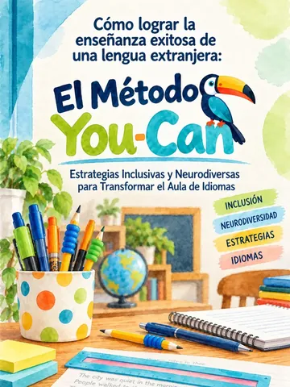
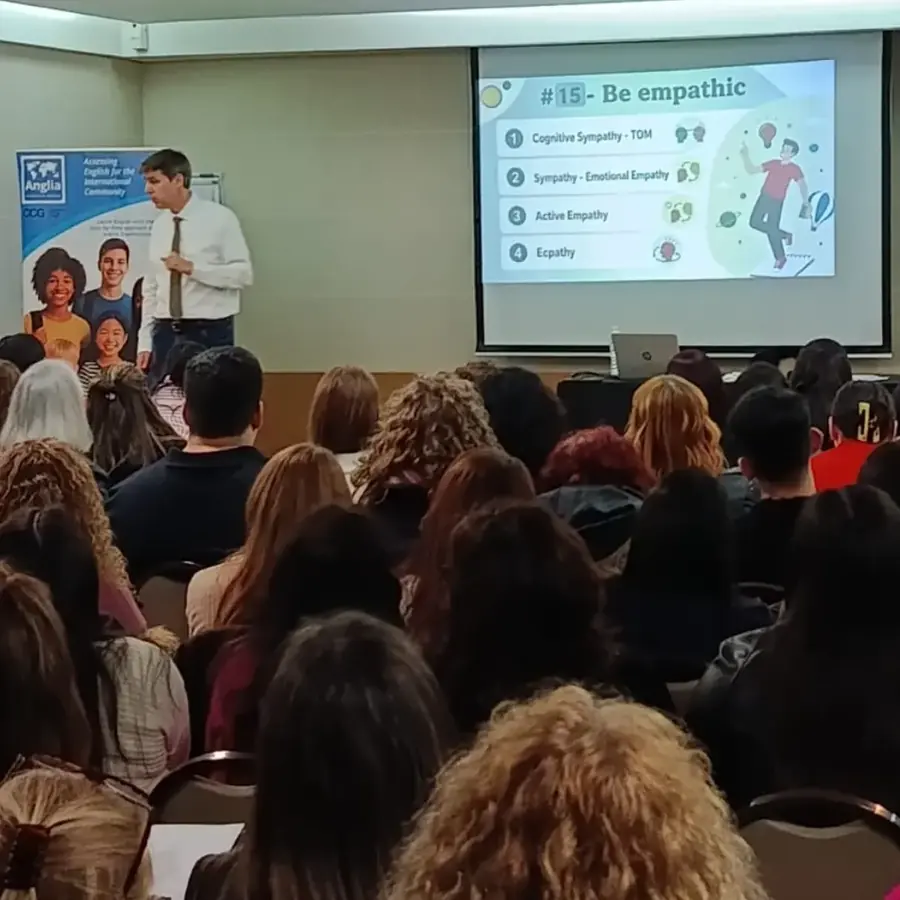
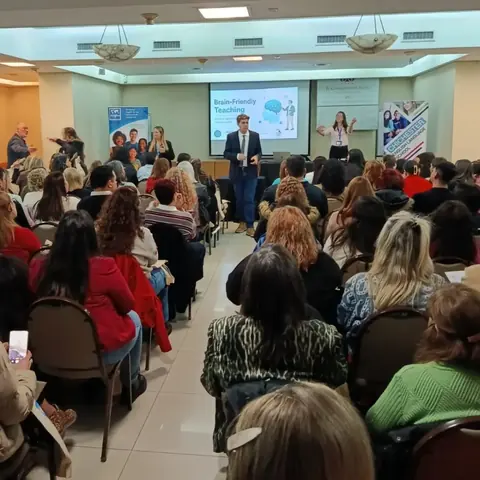
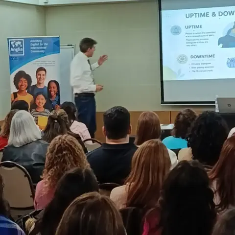
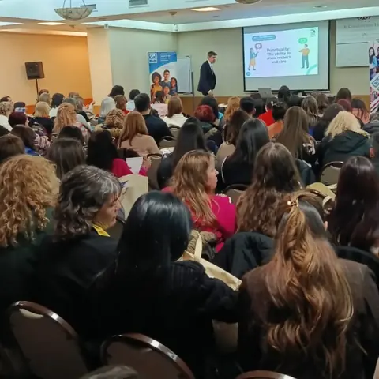
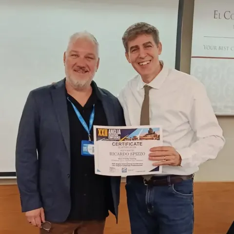

Capacitación online · 2 encuentros
Enseñar sin barreras
Dislexia y neurotips en la enseñanza de inglés.
La dimos junto a ForAH! English Institute, con profesores y profesionales que se sumaron desde su casa.
Quiero enterarme de la próximaTeacher training · English lessons · Neuro-pedagogy
Capacitación docente, clases de inglés especializadas y material inclusivo en PDF, con neuropedagogía. Online en todo el país y presencial en Buenos Aires.

Material inclusivo · PDF
Elegís, pagás con Mercado Pago y el archivo te llega solo al mail y por WhatsApp. Para usar en clase o en casa.
Inclusion · Probalo vos
Este texto simula el esfuerzo extra que puede costar leer cuando decodificar no es automático. Activá los neurotips de a uno y mirá cómo cambia: son ajustes simples, como los que se trabajan en las capacitaciones y en las clases.
The city was quiet in the morning. People walked to the bus stop with a cup of coffee. Dani dropped her bag, and a big brown dog picked it up. “Good boy!” said Ben. “Bring it back!” The dog put the bag down by the door.
Arrastrá la regla o usá las flechas ↑ ↓
Es una simulación para empatizar, no un diagnóstico. La dislexia no es un problema de la vista ni de inteligencia: es una forma distinta de procesar el lenguaje escrito, y cada persona la vive a su manera.
Neuropedagogía aplicada al aula de idiomas: cómo aprende el cerebro, dislexia y neurotips, estrategias inclusivas. Para docentes, institutos y colegios, online o presencial en Buenos Aires.
Capacitación online · 2 encuentros
Dislexia y neurotips en la enseñanza de inglés.
La dimos junto a ForAH! English Institute, con profesores y profesionales que se sumaron desde su casa.
Quiero enterarme de la próxima
Charla de apertura · 5 de septiembre de 2026
15 Practical Tips to Transform Your Classroom.
En la XXII Anglia International Conference, en el Hotel Conquistador (CABA): 15 estrategias compatibles con el cerebro para mejorar la atención, la participación, la motivación y el aprendizaje a largo plazo.
Llevarla a mi instituciónClases de inglés especializadas, con estrategias de neuropedagogía para quienes aprenden distinto: dislexia, dispraxia y otras formas de aprender. Online desde cualquier lugar del país o presencial en Buenos Aires.
Pienso diferente, aprendo a mi manera y eso es mi superpoder.
Quién está detrás de You Can
Es quien está detrás de You Can: profe de inglés, capacitador docente y disertante en neuropedagogía. El 5 de septiembre abrió la XXII Anglia International Conference, en Buenos Aires, con su charla Brain-Friendly Teaching ante un salón lleno de profes.
“I'll give you lots of tips that will make your teaching more successful.”




Una de nuestras infografías, para tocar: abrí cada error y mirá qué le pasa al cerebro de tu alumno.
Su cerebro busca novedad. La repetición no motiva ni activa su atención.
Activa su amígdala y dificulta el aprendizaje.
Las emociones se contagian: tu intensidad amplifica la suya.
Está en modo supervivencia. No puede escucharte, solo defenderse.
Activa su alarma emocional y debilita el vínculo con vos.
Daña su autoestima en plena construcción de identidad.
Su corteza prefrontal todavía está madurando. No puede dar respuestas que no entrenó.
Si no decide ni se equivoca, no entrena sus funciones ejecutivas.
De la infografía «Educar sin entender su cerebro» de @you.can.education. Trabajarlo con tu equipo docente
Contanos qué buscás y te respondemos con fechas, modalidades y valores. Sin compromiso.
¿Tu duda no está? Preguntanos por WhatsApp.
Apenas se acredita el pago en Mercado Pago te llega un mail y un WhatsApp con el link de descarga. No tenés que esperar a que alguien te lo mande.
Con Mercado Pago: tarjeta de crédito o débito, dinero en cuenta y los medios que tengas habilitados ahí.
Las dos: online desde cualquier lugar del país o presencial en Buenos Aires. Escribinos por WhatsApp y coordinamos días y horarios.
Sí. Las clases especializadas se apoyan en la neuropedagogía y en estrategias inclusivas para quienes aprenden distinto. Contanos el caso por WhatsApp y vemos cómo encararlo.
Escribinos por WhatsApp contando cuántos docentes son, qué temas les interesan y si la prefieren online o presencial en Buenos Aires, y lo vemos.
Los valores de clases y capacitaciones se pasan por WhatsApp, según lo que busques. Los PDFs tienen su precio publicado en la tienda.
Todavía no, pero falta poco. Escribinos y te avisamos cuando esté.
Escribinos por WhatsApp y te contamos fechas, modalidades y valores de clases y capacitaciones.